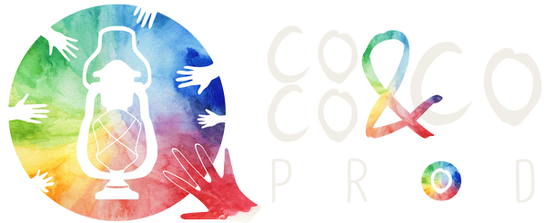
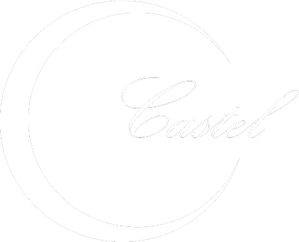
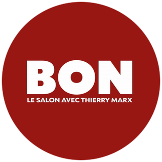
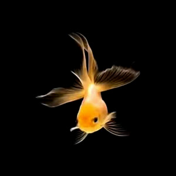
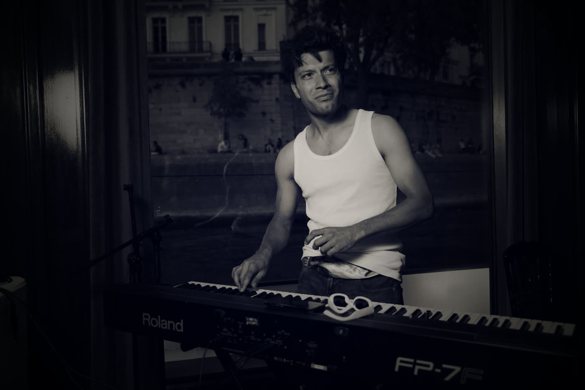

En toute circonstance.Situations
- I
Salons
Foires d’art, salons et vernissages.
Art BaselSalon du BonB ExpoBarbecue FestGalerie Florence de VoldèreAmbassade de France en Russie
- II
Musique à l’image
Composition pour le cinéma, le théâtre et les marques.
Festival des Sœurs JumellesVille de ParisCoco & Co Prod
- III
Événement privé(vidéo sur YouTube, nouvel onglet)
Bar, restaurant, hôtel : la musique suit le déroulé de la soirée.
BarRestaurantHôtelRéception privée - IV
Concerts et clubs festifs
Sur scène ou en club, quand la salle veut chanter et danser.
SilencioCastelLe Piano VacheMaxim’sMadame SimoneGainsbarreMistinguett
- V
Événements religieux
Mariages, baptêmes, communions : la musique accompagne la cérémonie.
MariagesBaptêmesCommunions
Répertoire Chanson françaisePop anglaiseVariété américaine

Something (The Beatles), reprise par Octave




Octave
Pianiste et compositeur installé à Paris. Autodidacte, passé par le conservatoire du 6ᵉ arrondissement de Paris, il s’est surtout formé au contact de la scène. Il joue pour des réceptions privées, des galeries et des festivals, et compose pour le cinéma.
Français · English · Русский · Español
Compositeur pour l’image →Parlons de votre lieu.
Disponibilités à définir ensemble. En France, en Suisse et ailleurs.